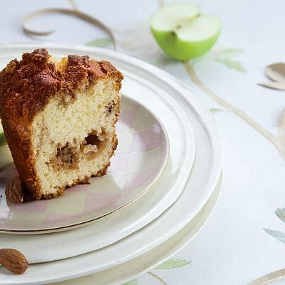

<!-- <div class="s">
  <ul>                    
   <li><span> פופולרי</span>
    <mat-selection-list #shoes>
      <mat-list-option *ngFor="let shoe of listMenus">
        {{shoe}}
      </mat-list-option>
    </mat-selection-list>
  </li>
  <li><span> פופולרי</span>
    <mat-selection-list #shoes>
      <mat-list-option *ngFor="let shoe of listMenus">
        {{shoe}}
      </mat-list-option>
    </mat-selection-list>
  </li>
  <li><span> פופולרי</span>
    <mat-selection-list #shoes>
      <mat-list-option *ngFor="let shoe of listMenus">
        {{shoe}}
      </mat-list-option>
    </mat-selection-list>
  </li>
  <li><span> פופולרי</span>
    <mat-selection-list #shoes>
      <mat-list-option *ngFor="let shoe of listMenus">
        {{shoe}}
      </mat-list-option>
    </mat-selection-list>
  </li>
  </ul>
</div> -->

<div class="body">

  <div class="searchResult">
  <label class="result_message">
    454 תוצאות
  </label>
  <div class="search_sort">
  
    <label> <span>מיין:</span><span>
        <form>
      <select  >
      <option  *ngFor="let x of sort">{{x}}</option>
      </select>
      </form></span></label> 
    <label> <span>הצג:</span><span>
      <form>
      <select>
      <option  *ngFor="let x of show">{{x}}</option>
      </select>
      </form></span></label> 
  </div>
  </div>
<div class="list-items">
  <ul *ngFor="let item of listMenus"> 
          <li><div class="container" >
            <div class="image" >
              <div class="type">     
                       

              </div>
              
            
            <div class="text">
             <span><a routerLink="/MyHome/ShowMealDetails">מתכון</a> </span>
             <h2> עוגת חלבה </h2>
              <!-- <strong> תיאור</strong> -->
              <div >
                <ul>
                  <li>45 דקות </li>
                  <!-- <li>כשר</li> -->
                  <li>קל</li>                           
                </ul> 
                <div>
                    <mat-icon>star_outline</mat-icon>
                    <mat-icon>star_rate</mat-icon>
                    <mat-icon>star_rate</mat-icon>
                    <mat-icon>star_rate</mat-icon>
                    <mat-icon>star_rate</mat-icon>  
                  </div> 
                  </div>       
            </div>
          </div>
            <div class="middle">
            <mat-icon>favorite</mat-icon>
          <mat-icon>add_circle</mat-icon>
          <mat-icon>download</mat-icon>
            </div>
          </div></li>
  </ul>
</div>
</div>
